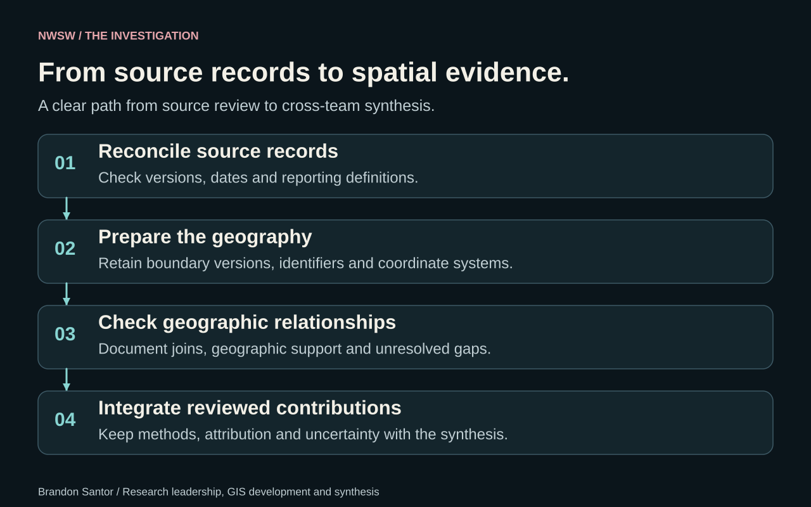
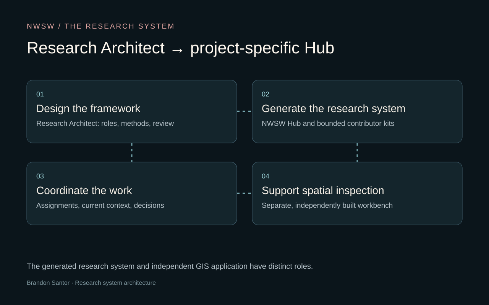
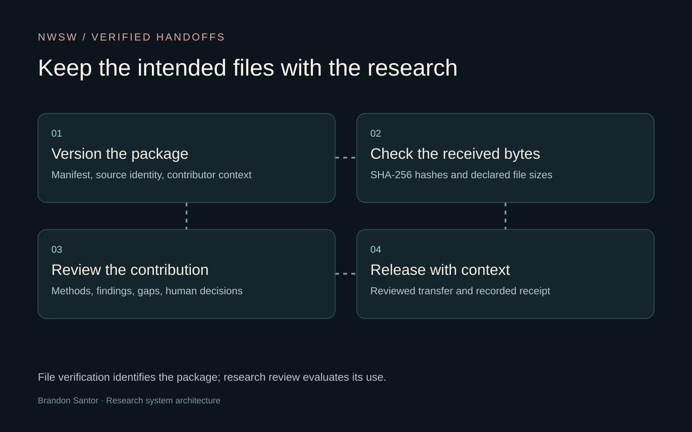

Frame the investigation
InputResearch questions
ProcessResearch Architect → Hub
OutputBounded assignments
I define evidence needs, workstreams, and review responsibilities before combining the team’s work.
I lead New World Screwworm (NWSW) research, build its GIS foundation, and connect the team’s contributions into an assessment whose sources and decisions can be inspected.
Read the case study ↓


How do reporting practices, surveillance coverage, and changing map boundaries affect what the available NWSW records can tell us? I bring those sources into a common geographic and analytical framework so differences in the records are not mistaken for differences in the underlying biology.
I coordinate the team’s research synthesis, reconcile sources and reporting definitions, prepare reusable map layers, and maintain the shared evidence table. I lead boundary preparation: assigning stable identifiers, checking that map geometry is valid, and connecting records to the correct geographic areas. I package the layers and decisions so another researcher can inspect and reuse them.
I also designed the research infrastructure. I used Research Architect to generate the project’s coordination system, define each person’s assignment and review responsibilities, and keep methods and decisions attached as the work develops.
Research Architect is the reusable framework: it turns a reviewed research plan into individual AI assistant kits, with assigned roles, methods, and review steps. The NWSW Hub is the project-specific system generated from that framework. It coordinates assignments, receives returns, keeps the current working context, and distributes material after review.
Research Architect also includes a small browser-based evidence interface for inspecting submissions, revisions, receipts, and original files. That interface and the generated Hub workflow are separate from the Spatial Evidence Workbench, the independent GIS application I built for mapped investigations and exports.
Each contributor return includes a versioned manifest—a list of the files expected in the package—and SHA-256 fingerprints, digital checks that flag changed file contents. Intake compares the received files and sizes with that list, keeps conflicting versions rather than overwriting them, and records a receipt before research review. These checks help confirm that the team received the intended files; they do not validate the scientific claims inside them.
Human review then determines how a contribution enters the research. Source identity, contributor attribution, method choices, unresolved gaps, and distribution decisions remain attached to the handoff.
Before combining evidence, I reconcile reporting periods, geographic units, and source versions. Each boundary carries a stable identifier and release date into the geographic joins. This helps distinguish a change in map definitions from a change in the phenomenon being studied.
The ongoing project has produced reusable boundary layers, reconciled source-backed datasets, and documented research handoffs. The next synthesis brings those components into the shared assessment.
I independently built the Spatial Evidence Workbench to inspect original evidence, review records, map linked features, and export investigations with their context. Its engineering deserves its own case study; it supports the research described here.
Explore each stage of the work.
I define evidence needs, workstreams, and review responsibilities before combining the team’s work.
Versioned manifests and SHA-256 checks identify received files, preserve conflicts, and create a technical receipt.
I reconcile reported areas and prepare map boundaries with unique IDs, release dates, and geometry checks. Geographic joins match each record to the mapped area it describes.
I bring reviewed contributions into a shared evidence table. Each entry retains its method, source, attribution, and unresolved questions so readers can compare what is known and what still needs review.